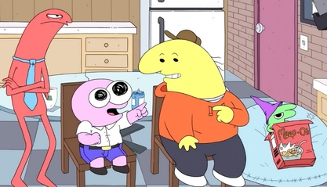

Smiling Friends is an adult animated sitcom created by Zach Hadel and Michael Cusack for Cartoon Network's nighttime programming block Adult Swim. The show revolves around the surreal misadventures of a small charity and its four employees dedicated to spreading happiness. It utilizes a wide variety of different art styles and animation techniques, including stylized traditional animation, computer animation, rotoscoping, stop motion, Flash animation, and live-action.
The pilot episode aired April 1, 2020, unannounced as part of Adult Swim's annual April Fools' Day event alongside the premiere of Cusack's other series, YOLO. On May 19, 2021, Adult Swim ordered a full season that was initially set to premiere in late 2021.[3] A panel dedicated to the series was held during the Adult Swim Festival on November 12, 2021, where co-creator Zach Hadel mentioned the show would premiere "within a few months", pushing the release schedule ahead to 2022.[4] The first season contains nine episodes, including the pilot and an 11-minute special.[5][6][7] The first season eventually premiered on January 10, 2022, with Adult Swim airing all episodes of the season, except for the special, in one night despite initial plans for a weekly release.[8][9][c]
Smiling Friends received positive reviews from critics. It was renewed for a second season on February 9, 2022.[10] The season premiere aired on April 1, 2024,[11] with the rest of the season beginning to air on May 13.[12][13] On June 13, 2024, Adult Swim renewed the series for a third season.[14] The third season was previewed at Annecy on June 11, 2025.[15] On the same day, it was announced the series was renewed for an additional fourth and fifth season.[16][17] The third season premiered on October 5, 2025.[18]
Despite being renewed for two more seasons, in February 2026, Hadel and Cusack announced in a video that the series would end after its third season.[19] They attributed the series' abrupt conclusion to burnout, a shared belief that the show had run its natural course, and expressed concern that if they continued creating episodes that there would be a drop in quality.[20] Despite this, they did not entirely rule out the possibility of the series returning for a special or another season in the future. The final two episodes of the third season were released on April 12, 2026.[21]
Premise
The series follows the misadventures and shenanigans of four employees and their boss at Smiling Friends Inc., a nonprofit charity based in Philadelphia, Pennsylvania dedicated to making their clients smile.[22] The majority of the show focuses on two employees, Charlie Dompler and Pim Pimling; Pim is overtly cheerful, optimistic and eager to help people with their problems, whilst Charlie is more cynical and pragmatic. They are occasionally assisted by their coworkers, Allan Red and Glep, as well as their eccentric yet caring employer Mr. Boss. Chaos ensues, as the strange and often deeply troubled characters they are tasked with helping prove challenging and thrust them into bizarre situations.
Voice Cast
Main Roles
- Michael Cusack as:
- Pim Pimling: a short, pink character and one of the primary protagonists of the Smiling Friends. Pim is primarily known for his cheerful and optimistic personality as well as being the most willing to help others in need.
- Allan Red: a tall and lanky red character who works as an office manager at the Smiling Friends. Allan is primarily known for his deadpan personality, monotone voice and sarcasm towards others. Nevertheless, Allan is also known for being extremely dedicated to his job and has been shown to go through extreme lengths to satisfy his boss.
- Mr. Frog: a green frog-like demon who engages in extreme acts of unprovoked violence and destruction. Mr. Frog was a worldwide celebrity who began his career as the star of The Mr. Frog Show, but would later become the President of the United States, emperor of the world and the wealthiest man on the planet. He eventually finds inner peace which transforms him into a photo-realistic frog.
- Cusack also provides many additional voices in each episode. Some include Professor Psychotic, a mad scientist who wishes to create life from an egg; Rex, the producer of The Mr. Frog Show; and James, a man obsessed with Charlie who tortures him. Cusack also voices most characters with Australian accents.
- Zach Hadel as:
- Charlie Dompler: a large, yellow character and one of the primary protagonists of the Smiling Friends. Charlie is primarily known for his laid-back, cynical and pessimistic attitude, especially when compared to his best friend Pim, but has a genuinely good heart.
- Glep: a small, green character known for wearing a conical, purple hat and speaking in fast gibberish. He is typically seen relaxing in the company's break room. Born in 329, the third season's eighth episode reveals he was indirectly responsible for the collapse of the Roman Empire and the spread of the Black Death throughout Europe, as well as inspiring Mr. Boss to co-found Smiling Friends in 1992.
- Hadel also provides many additional voices in each episode. Among the most prominent are Mip, a forest folk from the Enchanted Forest; DJ Spit, an unhinged amateur SoundCloud rapper and thief; Satan, the lord of Hell; Gwimbly, a 3D animated low-poly video game character; Mr. Landlord, a psychotic landlord at Allan's apartment; and Squim, a fluidly animated smiley face stylized like a Walt Disney Animation Studios and Don Bluth character.
- Marc M. as:
- Mr. Boss: an elderly and eccentric man who is the owner of the Smiling Friends. Despite his bizarre and sometimes disturbing behavior, Mr. Boss genuinely cares for all of his employees.
- Marc M. also provides additional voices. Among these are a man at the Brazil airport; a Goblin construction worker; and Bill Nye.
Supporting Cast
- Joshua Tomar provides multiple one-off characters in every season of Smiling Friends. Some of his well-known roles include an elderly-aged Glep, the video game enemy Trogdor, and a recurring lazy blue police sergeant, among other roles.
- David Dore as Party Bro (or "Rotoscope Guy") / Forest Demon / Armzo / Critter Doctor / Blue Critter / additional voices
- Erica Lindbeck as Rex's Assistant / Jennifer the Barista / Mustard / Princess of the Enchanted Forest / Brittney / Maurine / Marge Simpson (not to be confused with the Simpsons character of the same name) / Natasha / additional voices
- Lindbeck also appears in live action as Vivianne the Nurse.
- Rodrigo Huerta as Meep Society Lady / Jombo / Secret Service Agents / Fireman / Pim's brother / additional voices
- Chris O'Neill as Smormu James Carter / Mr. Frog Auditionee / Yeti
- Hans van Harken as Jimmy Fallon / Priest / Hell Faces / Bill[23] / Alien / Mint-Green Critter / additional voices
- Mick Lauer as Bug / Guy at the Gym / Crazy Cup / Elf / additional voices
- Harry Partridge as Smormu Announcer / Grease / 3D Squelton / William Worm
- David Firth as Shrimp / Fillmore / Mole Man / 1347 Peasant / Pink Man / Jimmy Durante
- Monica Franco as Zoey / Waitress / Wendy Worm
- Lyle Rath as Mr. Man / IGBG CEO / Renaissance men
Guest appearances (animated)
Introduced in season 1
- Mike Stoklasa as Desmond / Purple Alien[24]
- Stoklasa also appears as himself in live-action for a split second frame
- Finn Wolfhard as Squatter / various Bliblies
- Nick Wolfhard as Graham Nelly / various Bliblies
- Tom Fulp as Alpha
- Chills as Patron
- Jason Paige as Dream Singer
- Gilbert Gottfried as God
Introduced in season 2
- Joel Haver as Doug
- Marc Winslow as Pim's Spanish voice[d]
- Edson Matus as Charlie's Spanish voice[d]
- Rich Evans as Brown Alien[24]
- Jay Bauman as Police Alien[25]
- TruVoice Peter Adult Male #1 as Oscar-Jester
- Dana Snyder as Rotten the Snowman
Introduced in season 3
- Conner O'Malley as Silly Samuel[26]
- Jim Norton as Mothman
- Todor Manojlovic as Mother Nature's minions
- Bill Butts as Mr. Ice Cream
- Dave Willis as Blart
- John DiMaggio as Uncle Bilbert
Guest appearances (live action)
- Jane Badler as Celebrity Show Host
- Jim Knobeloch as Mystery Show Host
- Clyde Boraine as Policeman
- Perry Caravello as Simon S. Salty
- James Rolfe as himself (split second frame)
- Mike Bocchetti as President Jimble
- Doug Walker as Daniel the Demon Slayer
- Abed Gheith as Tyler
- Jeff Schubert as Basement Guy
- Creed Bratton as Father Frog
- Bob McLean as Old Man
- Brian O'Halloran as himself
- Emme Dillard as Allan's Muse
- Qurban Ali as Bob (Friend-Bot unmasked)
Season 1 of the series was written and directed by series creators Michael Cusack and Zach Hadel. Starting with season 2, episodes were directed by different directors under an "episode director" role, while Cusack and Hadel retained their roles as "series director."
Episodes 5, 7 and 8 of season 2 do not credit any writer.
Shorts
Two short films labeled Smiling Shorts were released on Adult Swim's YouTube channel before the third season's release.[55][56] A third short was released following the first eight episodes of season three.[57]
In addition to these, a number of guest-animated promotional shorts have been released. These include Smiling Friends Employee Training Software Walkthrough, directed by Paul Robertson and Michelle Larney, Smiling Symphonies (parody of Looney Tunes/Merrie Melodies), directed by Aron Fromm, Smiling Ball Z (parody of Dragon Ball Z), directed by Shane Dering[58] and Ghosts & Chainsaws (part of Spook Train), directed by Lee Hardcastle. The latter short is a full-length version of the film shown in the beginning of the episode "Curse of the Green Halloween Witch".[59]
Production
Smiling Friends was created by animators Zach Hadel and Michael Cusack, noted for their individual successes as content creators for Newgrounds and YouTube. Already well-acquainted with each other online, the pair conceived the idea for the show in 2017 whilst dining at Gus's Chicken in Burbank, California (during a visit from Cusack, who is based in Melbourne).[60] Hadel stated in an interview that the pair's goal for the show was to base it around "a group of lovable characters, with a simple kind of concept, which we could take anywhere we wanted to". They settled upon the premise of a hotline for people who were unhappy, which became "the connective tissue that made it all click together". He said that although "the company is an important aspect of the show, it's really the springboard" and that they "have episodes where it's not even about the job at all". The pair singled out South Park and Seinfeld as amongst the show's biggest influences. The duo developed the show's art style as a 50/50 blend of their own individual styles, though Cusack noted that his own drawings tend to go through a "final Zach gloss".[61][62] Early in development, the series went under the working title Little Helpers, with an entirely different cast.
Hadel and Cusack pitched the series to Cartoon Network, which greenlit production on the pilot for the network's nighttime programming block Adult Swim in 2018. Hadel had previously attempted to sell his and Chris O'Neill's web series Hellbenders to the network, but the project was not picked up while an independently produced pilot was shelved during production. O'Neill would later compose the Smiling Friends theme song.[63] Meanwhile, Cusack created the Rick and Morty parody Bushworld Adventures, which premiered as an April Fool's Day stunt on the network in 2018, and also created the series YOLO, which premiered in August 2020.
The Smiling Friends pilot, which the pair consider the first official episode, aired on Adult Swim on April 1, 2020, to positive reviews[64] and became the most viewed episode of any show on the network's website.[10] The network subsequently ordered seven additional episodes in May 2021. Serving as showrunners, Hadel and Cusack were hands on in all aspects of production, from writing, storyboards, character designs, final animation and sound design, which the duo considered unusual for an adult animated series. According to Hadel, the budget for the entire first season was equivalent to that of a single episode of Family Guy (an estimated US$2,000,000).[62][65]
Adult Swim renewed the series for a second season on February 9, 2022.[66] On May 18, 2022, Hadel announced on Twitter that a special would be released sometime before the second season.[67] A listing for an episode titled "The Smiling Friends Go to Brazil!" appeared on Rotten Tomatoes on July 21, and was confirmed by Hadel and Cusack at Adult Swim's San Diego Comic-Con panel the next day. It aired on August 6, 2022. Lead-in promotion to the episode purposely suggested a more conventional vacation episode than what was actually presented, with a poster of the Smiling Friends relaxing on a Brazilian beach,[68] and a summary suggesting that the episode would be about the gang relaxing in a beautiful Brazilian beach town.[69]
During Adult Swim's panel at New York Comic Con in October 2023, it was confirmed that the second season would premiere in 2024, and would continue to explore a variety of animation styles, such as stylized 2D, 3D, stop motion, flash animation, rotoscoping, and live-action content.[70]
On June 13, 2024, at Annecy International Animation Film Festival, it was announced the series was renewed for three additional seasons.
The first two seasons were primarily animated by Studio Yotta and Princess Bento Studio, a joint venture between the Melbourne-based media company Princess Pictures and the American animation studio Bento Box Entertainment. The studio has additionally worked on Cusack's other animated series, such as season 2 of YOLO and the Hulu original series Koala Man. Since Cusack lives in Australia and Hadel lives in the United States, the show is produced remotely.[71] Starting with the release of season 3 in 2025, production was fully moved to Williams Street in-house, with additional animation services being handled by Saerom Animation in South Korea and Dinamita Animación in Colombia, with specialty animation done by ZAM Studios: a new Los Angeles-based studio founded by Cusack, Hadel and Aron Fromm.[72] The final two episodes of the third season (and by extension, the series overall), however, were animated by Titmouse in Vancouver alongside ZAM still providing specialty animation for those episodes.
Broadcast
The pilot initially premiered on Adult Swim on April 1, 2020, during the network's April Fools Day event.[64][73
The series officially premiered on January 10, 2022, at 12:00 a.m. with the episodes "Mr. Frog" and "Shrimp's Odyssey". The rest of the series was then broadcast in an unannounced premiere marathon in its entirety starting from 12:30 a.m. followed by a repeat at 3:00 a.m. The episodes would re-air with two separate episodes airing in the intended premiere slots for the following 4 weeks afterwards, including another marathon on the night of February 13, most likely to pick up viewers tuning away from the end of Super Bowl LVI, as well as to promote the series's availability through HBO Max and the recent news of renewal for the series.[74]
In Canada, the series premiered simultaneously on Adult Swim with new episodes airing weekly. The series later premiered on E4 in the United Kingdom on January 21, 2022, and Adult Swim in France on January 24, 2022.[75][76]
The series was made available to stream on HBO Max in the United States and StackTV in Canada on February 9, 2022.[77][78]
The second season premiered on April 1, 2024, with the remaining episodes beginning to air on May 13; as an April Fool's Day prank, the premiere was preceded by airings of three season 1 episodes recreated using live action puppetry.[79]
On April Fool's Day in 2026, Adult Swim aired a version of the season 3 episode "Curse of the Green Halloween Witch" with an extended version of the Ghosts & Chainsaws claymation film (animated by Lee Hardcastle) that was briefly seen at the beginning of the episode.[80]
Home media release
Warner Bros. Home Entertainment released the first season on DVD and Blu-ray on August 29, 2023.[81]
Reception
Critical response
Smiling Friends received positive reviews from critics. Lex Briscuso of Vulture praised the show's tone and animation style, particularly its use of "unnerving close-up cuts and creepy supporting character design".[82] Margaret Lyons of The New York Times praised the show's humor and compared it favorably to Aqua Teen Hunger Force.[83] Noah Dominguez of Comic Book Resources also made this comparison, and additionally praised the show as "unique" and commended its "bizarre humor" and "surrealist tone".[64]
Accolades
For the 78th Primetime Creative Arts Emmy Awards, the series was nominated for Outstanding Animated Program[84].
In other media
The show was parodied in the episode "Estranger Things" of The Simpsons in 2025. A parody of The Simpsons would later appear in the Smiling Friends episode "Squim Returns".[85]
Pim, Charlie, and Mr. Boss appear in the Robot Chicken special The Robot Chicken Adult Swim Special, which premiered on August 30, 2026. The special serves as a crossover that celebrates Adult Swim's 25th anniversary, and also contain characters from Space Ghost Coast to Coast, Aqua Teen Hunger Force, Assy McGee, The Venture Bros., Harvey Birdman, Attorney at Law, Sealab 2021, Moral Orel, and Metalocalypse, among many others.[86][87].